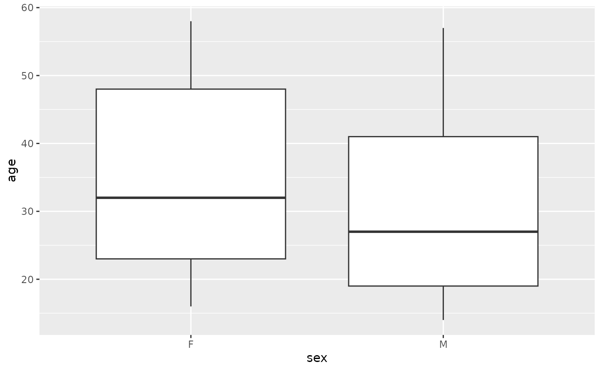

Day 2: Data Management, Statistical Analysis, and Visualization
day_2.RmdData management
all_file <- file.choose()
all <- read_csv(all_file)
glimpse(all)
#> Rows: 128
#> Columns: 21
#> $ cod <chr> "1005", "1010", "3002", "4006", "4007", "4008", "4010…
#> $ diagnosis <chr> "5/21/1997", "3/29/2000", "6/24/1998", "7/17/1997", "…
#> $ sex <chr> "M", "M", "F", "M", "M", "M", "F", "M", "M", "M", "M"…
#> $ age <dbl> 53, 19, 52, 38, 57, 17, 18, 16, 15, 40, 33, 55, 5, 18…
#> $ BT <chr> "B2", "B2", "B4", "B1", "B2", "B1", "B1", "B1", "B2",…
#> $ remission <chr> "CR", "CR", "CR", "CR", "CR", "CR", "CR", "CR", "CR",…
#> $ CR <chr> "CR", "CR", "CR", "CR", "CR", "CR", "CR", "CR", "CR",…
#> $ date.cr <chr> "8/6/1997", "6/27/2000", "8/17/1998", "9/8/1997", "9/…
#> $ `t(4;11)` <lgl> FALSE, FALSE, NA, TRUE, FALSE, FALSE, FALSE, FALSE, F…
#> $ `t(9;22)` <lgl> TRUE, FALSE, NA, FALSE, FALSE, FALSE, FALSE, FALSE, F…
#> $ cyto.normal <lgl> FALSE, FALSE, NA, FALSE, FALSE, FALSE, FALSE, FALSE, …
#> $ citog <chr> "t(9;22)", "simple alt.", NA, "t(4;11)", "del(6q)", "…
#> $ mol.biol <chr> "BCR/ABL", "NEG", "BCR/ABL", "ALL1/AF4", "NEG", "NEG"…
#> $ `fusion protein` <chr> "p210", NA, "p190", NA, NA, NA, NA, NA, NA, "p190", "…
#> $ mdr <chr> "NEG", "POS", "NEG", "NEG", "NEG", "NEG", "POS", "NEG…
#> $ kinet <chr> "dyploid", "dyploid", "dyploid", "dyploid", "dyploid"…
#> $ ccr <lgl> FALSE, FALSE, FALSE, FALSE, FALSE, FALSE, FALSE, FALS…
#> $ relapse <lgl> FALSE, TRUE, TRUE, TRUE, TRUE, TRUE, TRUE, TRUE, TRUE…
#> $ transplant <lgl> TRUE, FALSE, FALSE, FALSE, FALSE, FALSE, FALSE, FALSE…
#> $ f.u <chr> "BMT / DEATH IN CR", "REL", "REL", "REL", "REL", "REL…
#> $ `date last seen` <chr> NA, "8/28/2000", "10/15/1999", "1/23/1998", "11/4/199…
count(all, sex)
#> # A tibble: 3 × 2
#> sex n
#> <chr> <int>
#> 1 F 42
#> 2 M 83
#> 3 NA 3Introducing the ‘pipe’ |>
all |>
count(sex)
#> # A tibble: 3 × 2
#> sex n
#> <chr> <int>
#> 1 F 42
#> 2 M 83
#> 3 NA 3
all |>
filter(sex == "F") |>
count(mol.biol)
#> # A tibble: 5 × 2
#> mol.biol n
#> <chr> <int>
#> 1 ALL1/AF4 5
#> 2 BCR/ABL 16
#> 3 E2A/PBX1 1
#> 4 NEG 19
#> 5 NUP-98 1Statistical analysis
Summarization – count, mean, variance
all |>
filter(!is.na(age)) |>
summarize(n = n(), ave_age = mean(age))
#> # A tibble: 1 × 2
#> n ave_age
#> <int> <dbl>
#> 1 123 32.4
all |>
filter(!is.na(age)) |>
group_by(sex) |>
summarize(n = n(), ave_age = mean(age))
#> # A tibble: 2 × 3
#> sex n ave_age
#> <chr> <int> <dbl>
#> 1 F 42 35.2
#> 2 M 81 30.9Classical statistics – t-tests, linear regression
Survival analysis
Visualization
Box plot
ggplot(all_subset) +
aes(x = sex, y = age) +
geom_boxplot()
Scatter plot
Linear regression